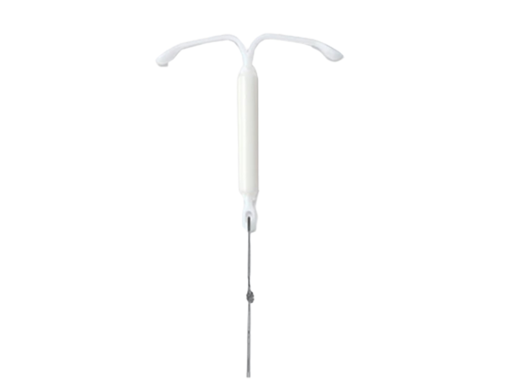

Mirena

图片来源：Museum of Contraception and Abortion
- 发明者：Dr. Jouri Valter Tapani Luukkainen
- 时间：1976年
Dr. Luukkainen沿用了Dr.Tatum所提出的字母T的形状，将水平壁上的铜线换成了含有人工合成孕激素的储库，可以在至少5年内每天释放20µg的左炔诺孕酮（Ng）。它的工作机制是使宫颈处的粘液变得粘稠从而阻止精子进入子宫，以及改变子宫内膜以阻止受精卵在子宫的附着。它所引起的子宫内膜萎缩和孕激素产生的宫颈粘液的理化变化与正确使用组合药产生的临床疗效相当。同时，其引发的粘液堵塞物对细菌同样是一道屏障，从而降低了盆腔炎的发生率。